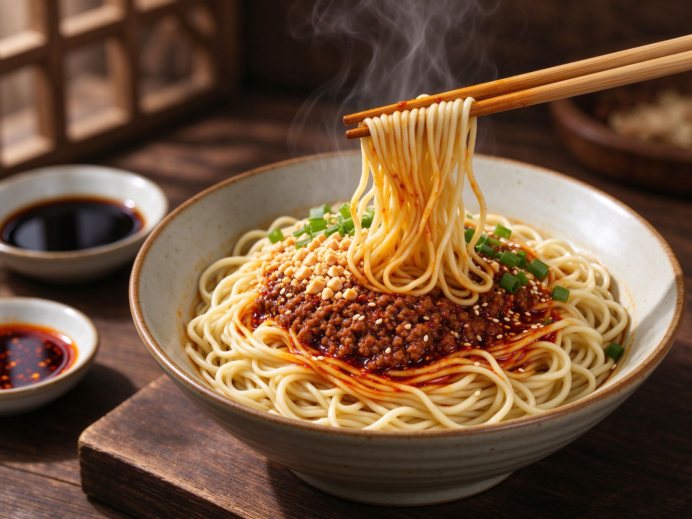

Dan Dan Noodles (担担面): The Sichuan Street Bowl at Home
Dan dan noodles are the Sichuan street-food legend that everyone has a takeout version of — and almost nobody gets right. The real bowl is a tangle of springy noodles tossed in a sauce that's simultaneously fiery, nutty, numbingly tingly, and a little sour, topped with crisp ground pork and a shower of peanuts and scallions. It comes together in about 30 minutes, and it's one of the most rewarding things you can cook in a wok.
What Makes Dan Dan Noodles "Real"
The takeout version is often a wet, tomatoey, sweet broth. The authentic Sichuan bowl is largely dry — the noodles are coated in a rich sauce built in the bowl, with just a little of the cooking water to loosen it. The soul of that sauce is the sesame paste, not broth, and its signature is the tongue-tingling Sichuan peppercorn. Master the sauce and you've mastered the dish.
Ingredients
For the sauce (per bowl)
- Sesame paste (tahini works) — 1 tbsp, the creamy backbone.
- Soy sauce — 1–2 tbsp for salt and depth (see our soy sauce guide).
- Chinkiang / black vinegar — 1 tsp, the tangy note (see our black vinegar guide).
- Chili oil — 1–2 tbsp, with some of the chili sediment.
- Sichuan peppercorn — ground, a generous pinch for that numbing tingle.
- A little sugar and chicken stock or noodle water to loosen.
For the topping and noodles
- Ground pork — about 100g per serving.
- Dried shiitake mushroom, finely diced (optional but adds depth).
- Doubanjiang — 1 tsp, fried with the pork (see our doubanjiang guide).
- Cooked wheat noodles — fresh, dried, or chow mein-style noodles all work.
- Chopped peanuts, scallions, and a few leaves of bok choy or spinach.
How to Make It, Step by Step
- Make the sauce — in each serving bowl, stir together the sesame paste, soy sauce, vinegar, chili oil, ground Sichuan peppercorn, and sugar until smooth.
- Fry the pork — heat a little oil in a wok, add the pork and diced mushroom, and stir-fry until crisp and browned. Push to one side, add the doubanjiang, and fry it in the oil for a minute until the oil turns red.
- Cook the noodles — boil your noodles per the package, then quickly blanch the greens in the same pot.
- Assemble — add a ladleful of noodle water to the sauce to loosen it, then the noodles, tossing to coat evenly.
- Top it — pile on the crispy pork, greens, chopped peanuts, and scallions. Finish with a drizzle of chili oil.
Three Ways to Make It Yours
- Add vinegar freely — the authentic version leans more sour than you'd expect; don't be shy with the black vinegar.
- Go vegetarian — skip the pork and double the mushrooms, or crisp some tofu; the sauce carries the dish (see our vegan Chinese guide).
- Adjust the numbing — more ground Sichuan peppercorn for the real tingle, less if you're new to it.
Common Pitfalls, Fixed
- Sauce is too thick — add noodle water a spoonful at a time until it coats the noodles, not drowns them.
- Not enough tingle — the peppercorn gets muted in a big batch; season each bowl individually.
- Pork tastes bland — salt the pork while frying and let the doubanjiang bloom in the oil; the topping should be punchy.
Dan dan noodles are the kind of dish that turns a quiet night into a small event. Once the sauce is in your head, you'll reach for it again and again — and you'll never order the takeout version the same way again.